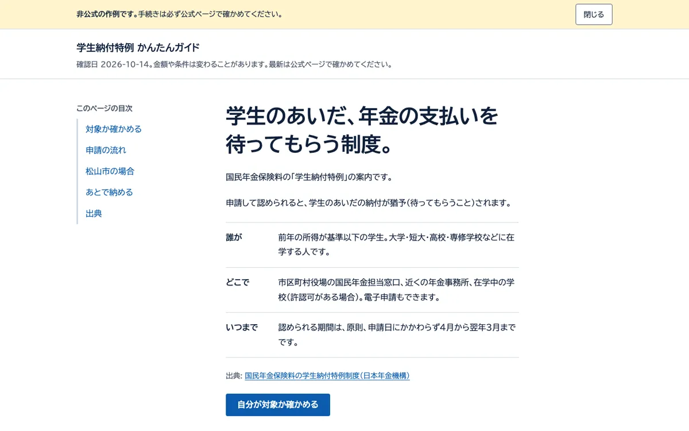
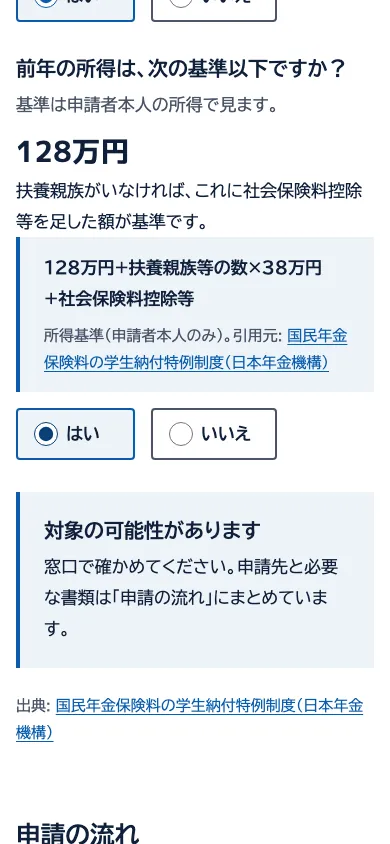

学生納付特例 かんたんガイド
制度の案内ページ・1ページ・対象かどうかの判定つき


想定した依頼文
学生向けの支援を案内するサイトを運営しています。年金の学生納付特例のページを、公式サイトのリンクを残したまま、スマホで読みやすい1ページに作り直してほしいです。読みづらい制度文を、自分が対象かどうかすぐ分かる形に。予算 1〜2万円。
「いま学生か」「前年の所得が基準以下か」の2つに答えると対象かどうかの見込みが出る案内ページです。申請の流れ・松山市の窓口・あとで納める決まりをまとめ、出典の公式ページ5件にリンクしています。
- ご依頼の場合の納期の目安
- 4日前後4〜6時間の作業を、1日1〜2時間で進めた場合。修正2回まで込み（範囲は下の「進め方」）。
作例を開く：学生納付特例 かんたんガイド
非公式の作例です。手続きは公式ページで確かめてください。